Mobile commerce
Imperfect Foods
Buy Smart, Save the Planet from Food Waste
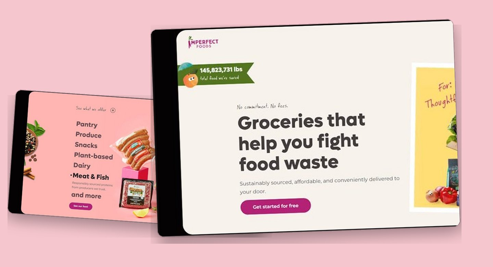
Overview
Imperfect Foods is a grocery delivery service committed to reducing food waste by selling products that are still perfectly edible but don't meet the cosmetic standards of traditional supermarkets. With a sustainable and subscription based approach, Imperfect Foods curates a variety of "imperfect" yet nutritious and delicious items ranging from fruits and vegetables to pantry staples, meat, dairy, and snacks. Customers simply set their preferences, and a customized box is delivered to their door each week. More than just convenience, this service empowers consumers to make more sustainable and socially impactful choices.
Problem
- Global food waste remains alarmingly high, often due to appearance based rejection.
- Edible products are discarded simply because they aren't "perfect."
- Traditional grocery shopping isn't always environmentally sustainable.
- Many people struggle to access healthy food at affordable prices.
Solution
- Save imperfect groceries that are still perfectly edible, ensuring they reach people instead of going to waste.
- Customers can easily subscribe, set preferences, and receive deliveries of curated groceries right at their doorstep.
- Offer quality food at lower prices, helping customers shop responsibly without overspending.
My role
I served as the UX/Ul Designer responsible for crafting a layout and information flow that is communicative, engaging, and aligned with the brand's mission to reduce food waste. My main focus was to create a page structure that educates users about Imperfect Foods' services through visuals that are friendly, informative, and easy to understand. I strategically organized each section from the educational headline, product categories, and service explanation, to customer testimonials. Additionally, I ensured that all visual elements, such as illustrations, icons, and colors, effectively supported the core message and encouraged user actions. The design also considered accessibility principles and mobile responsiveness to ensure an optimal user experience across devices. Every design decision was grounded in user research and the brand's value proposition to deliver a solution that is not only visually appealing but also functionally impactful.
Process
The design process for this project was divided into four key phases to ensure a user centered and results experience: 1. Discovery In the Discovery phase, I began by conducting competitor analysis to understand the design approaches used by similar services in the food and grocery delivery industry. This analysis helped me identify the strengths and weaknesses of competitors and uncover opportunities for differentiation. I also gathered user pain points related to their shopping experience, such as difficulties in finding affordable healthy products and lack of transparency about product origins. In addition, I defined the target users and audience individuals who care about sustainability and want to reduce food waste through more mindful consumption choices. 2. Ideation After understanding the problems and user needs, 1 moved into the Ideation phase by mapping out the user journey. Here, I illustrated the experience from the moment users land on the homepage to the point of signing up to start shopping. The main goal of this process was to identify key touchpoints that needed to be optimized to ensure users feel guided and comfortable. This journey map helped me design an intuitive flow that aligns with the brand's mission and improves the overall user experience. 3. Design Process To maintain visual consistency across the homepage, I developed a Design System that includes color selection and typography. The color palette reflects the brand's cheerful and inclusive spirit while also emphasizing its sustainability mission through natural tones. The typography was chosen for its readability across different screen sizes while maintaining a friendly yet professional tone. This system served as a foundation for designing all visual components, including buttons, icons, and layout structure. 4. Usability Testing In the Usability Testing phase, I began by creating tasks and scenarios that represent real user activities, such as browsing products, understanding the service, and signing up for an account. Although full testing had not yet been conducted at this stage, developing these scenarios was an essential first step to ensure that the design could be tested effectively. These scenarios will later be used to observe user interactions and identify potential usability issues.
Discovery
Discover and Understanding In the first phase of this project, I focused on deeply understanding the problem space and the users' expectations. Since Imperfect Foods operates in the sustainable grocery delivery space, the challenge was to design a homepage that not only communicates the brand's values but also builds trust and motivates users to take action. I explored the broader context of food waste, user shopping behavior, and the importance of transparency in grocery delivery services. This foundational understanding helped shape design decisions that are both user centered and aligned with the brand mission.
Competitor Analysis To gain insight into current standards and identify opportunities for differentiation, I conducted a competitor analysis of similar services. The analysis covered visual style, value communication, product clarity, and onboarding flow.
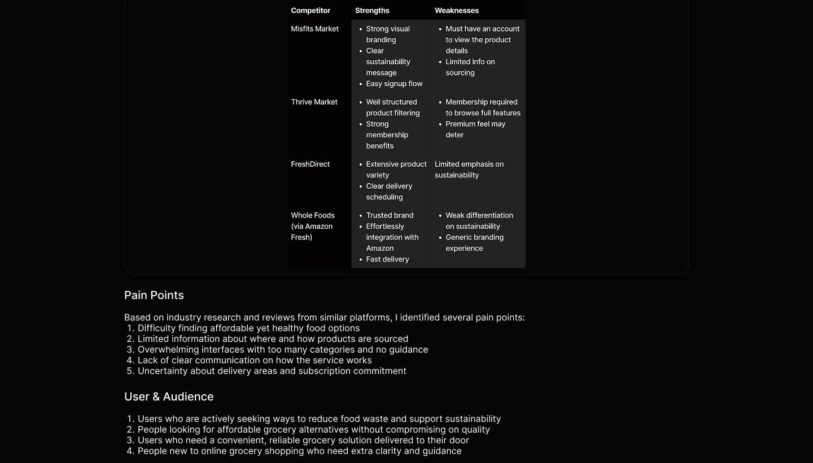
Ideation
At this stage, I translated insights from the discovery phase into a clear vision of how users would interact with the product. The main goal was to map out a seamless and intuitive user journey that aligns with both user expectations and the brand's mission. By focusing on users who are looking for a grocery delivery service that reduces food waste, I developed a scenario based journey to explore how they discover, evaluate, and decide to engage with Imperfect Foods.
User Journey
To better understand how users interact with the product from discovery to conversion, I created a scenario based user journey map. The scenario focused on a user who is actively searching for a grocery delivery service that aligns with their values specifically, one that is committed to reducing food waste by offering perfectly edible but imperfect looking products.
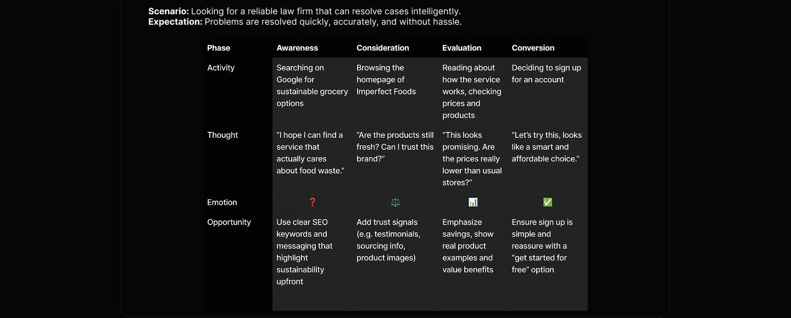
Design system
In this phase, I developed a design system to ensure visual consistency and scalability across the entire interface. The system defines core elements such as color and typography, which reflect the brand's identity and enhance user experience. The color palette combines natural tones with fresh, vibrant accents to communicate sustainability while maintaining an engaging and modern feel. Typography was selected for high readability across screen sizes, balancing friendliness and professionalism to suit both informative content and promotional messaging. Beyond color and text styles, the design system also includes responsive components adapted for both mobile and desktop views. Buttons, navigation, cards, and layout grids were designed with flexibility in mind to maintain usability and clarity across devices. This system acted as a foundation that streamlined the UI design process and allowed for efficient future scaling.
Design System
Neutral colors
Neutral 300 Neutral 600 Neutral 700 Neutral 500 Neutral 400 Neutral 200 Neutral 100 Neutral 50 #333333 #181818 #303133 #606266 #B3B3B3 #CCCCCC #E6E6E6 aFFFFFF
Typography
Roboto ABCDEFGHIJKLMNOPORSTUVWXYZ abcdefghijklmnopqrstuvwxyz 1234567890
36/Bold Heading 1 24/ Semi Bold Heading 2
20/Semi Bold Heading 3
16/Bold Body 1
16/Regular Body 2
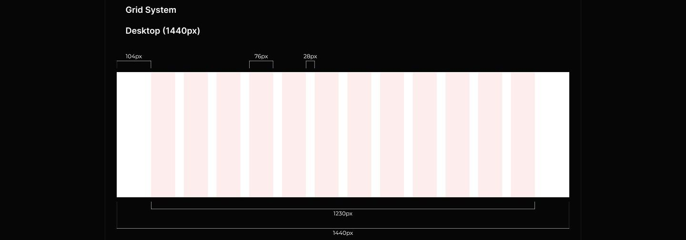
Final design
This design consists of four pages: Homepage, Tools, Blog, and Frequently Asked Questions. To provide a comprehensive understanding, the Homepage will be described section by section, while the other three pages will be presented in a more concise format."
Homepage
Hero Section
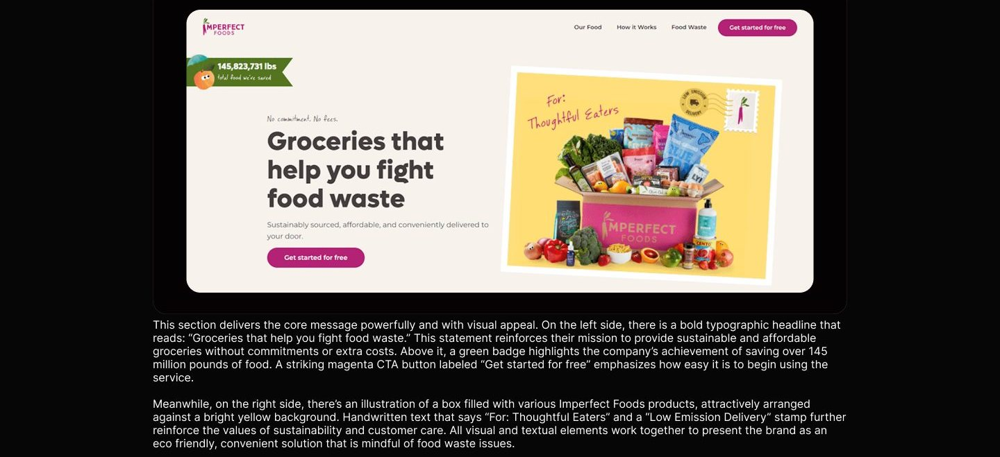
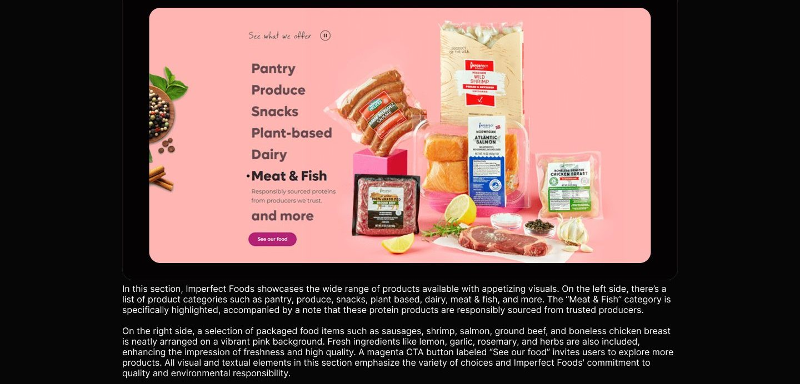
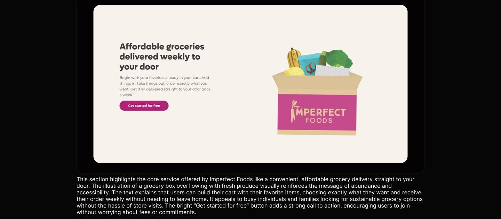
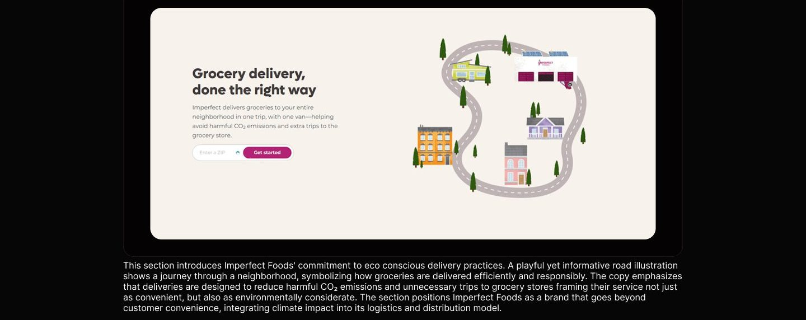
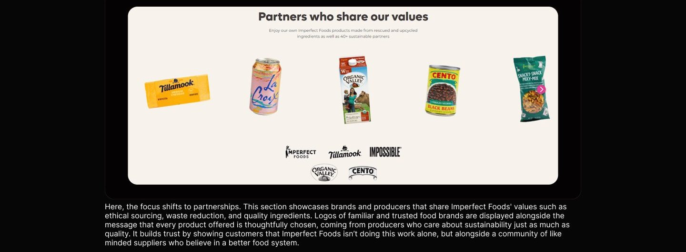
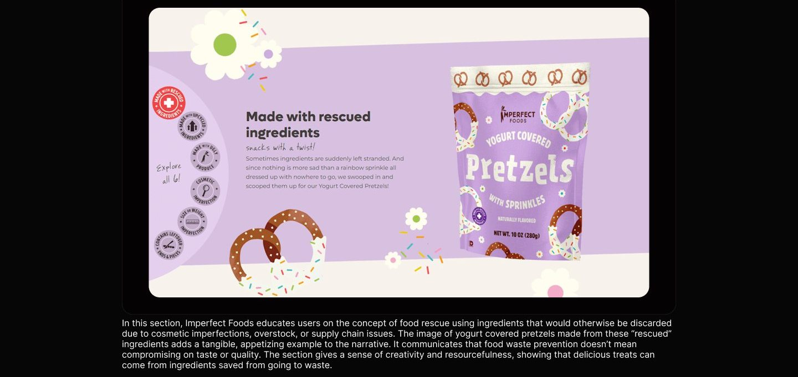
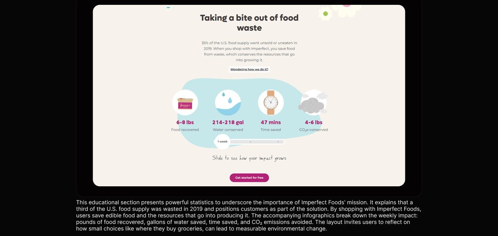
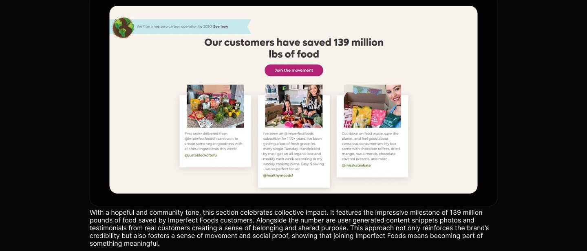
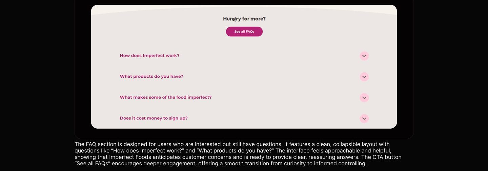
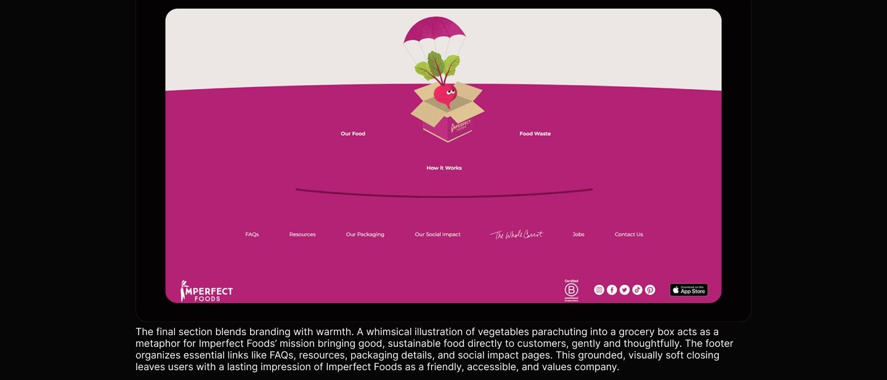
Usability testing
To evaluate the overall usability, effectiveness, and user satisfaction of the Imperfect Foods homepage, I conducted a set of moderated usability testing sessions with participants representing first time visitors who were interested in sustainable grocery solutions. Each session was built around realistic and goal scenarios to simulate how users naturally approach exploring and evaluating a mission food delivery service. Participants were given the following scenario to complete: 1. You've recently heard about a product that sells good quality food waste. You want to assess whether this platform is truly good to use. How would you find that information? 2. After browsing the official website, you try to find the product you're looking for. How do you find it? 3. Upon finding the product, you want to gather information about the positive impact of that product. How do you do it? 4. You're becoming more interested, but you still feel unsure. So you decide to check the testimonials. How do you view them? 5. After reading the testimonials, you still have a few questions about Imperfect's features or products. How do you get those questions answered? 6. Once your questions are answered, you feel confident enough to place an order. Now, you want to start using the service. What's the first step you need to take? These tasks were designed to test how effectively the homepage communicates the platform's mission and value proposition, the clarity of available information, and the ease of taking further steps such as understanding the product categories, reading about social or environmental impact, and beginning the order process. The testing focused on how users navigated sections such as product offerings, sustainability metrics, testimonials, and FAQ, as well as the visibility and clarity of CTA like "Get Started" or "See Our Food."
Reflection
If I had additional time, I would: 1. Gather users to conduct usability testing according to the scenarios and tasks created. 2. Conduct usability testing and iterate if there is feedback from users.
Full case study
The complete annotated board lives in Figma, with every flow, wireframe, and screen.